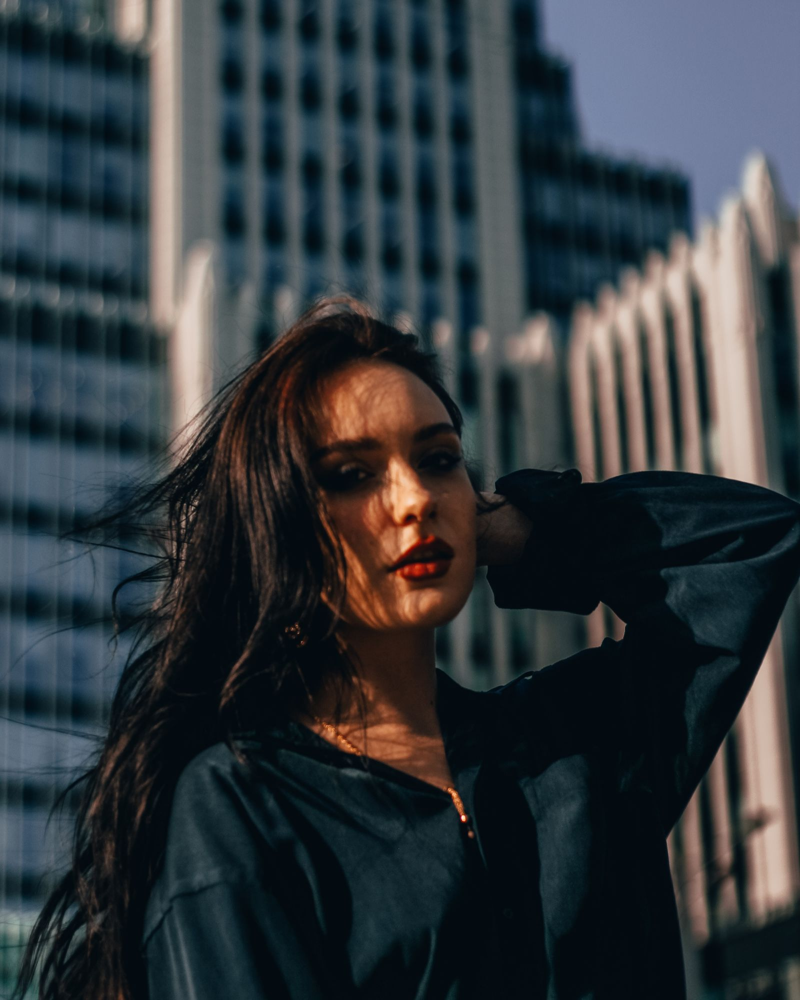
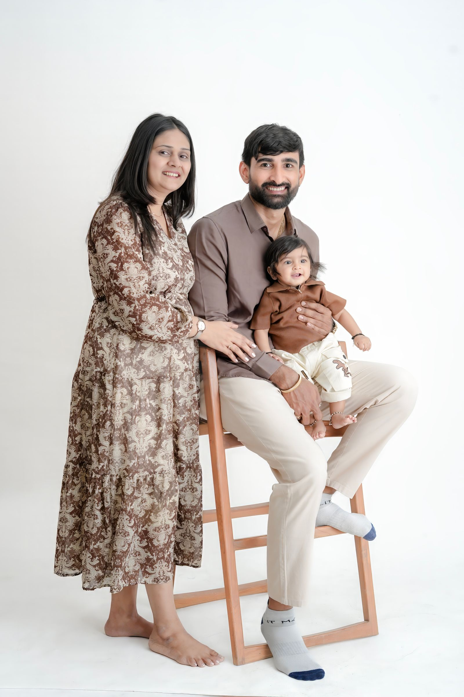
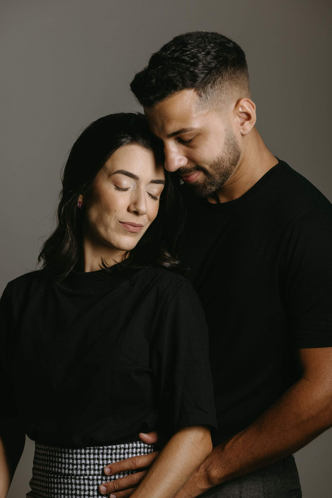
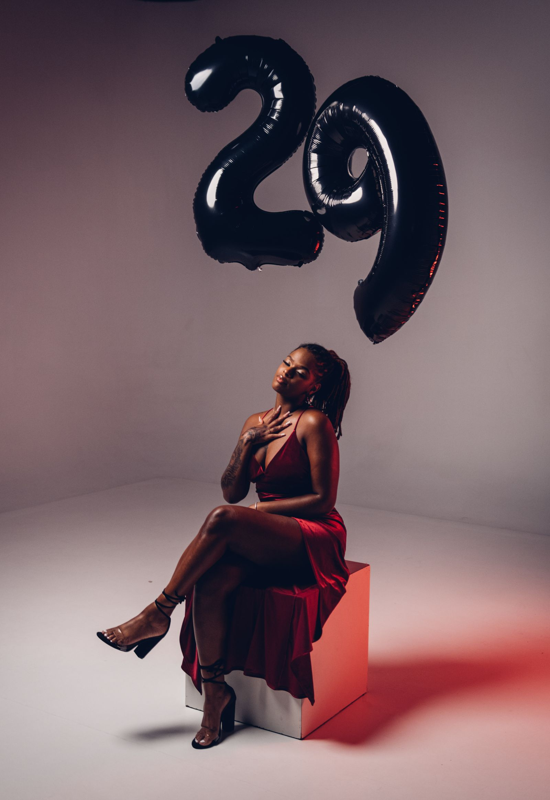

Individual & Editorial Portraits
A portrait with a point of view. Explore personal expression, a professional introduction or a change of look and light.
Choose a portrait session, time with your family or a record of this season. Each begins with a conversation.

A portrait with a point of view. Explore personal expression, a professional introduction or a change of look and light.

Whole-family portraits, smaller pairings and space for children to be themselves. Bring a familiar toy and the people you want beside you.

Thoughtful portraits of this season. Gentle direction, seated options and room for a partner keep the session comfortable.
For shared milestones, a new chapter or the way you introduce yourself. Tell us what you have in mind.

Relaxed portraits built around your connection. Shared gestures, a little movement and a setting that feels like you.

A clear, contemporary introduction. Considered light and a simple background keep attention on your face and expression.

Mark a birthday, graduation or personal turning point with a portrait shaped around the occasion and the people you choose.
Tell us who will be in the frame and how you would like the photographs to feel. We can discuss preparation, scope and availability through your session enquiry.
Prepare your enquiry